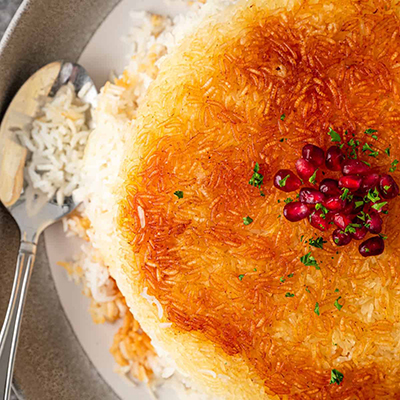
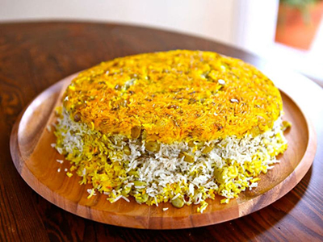
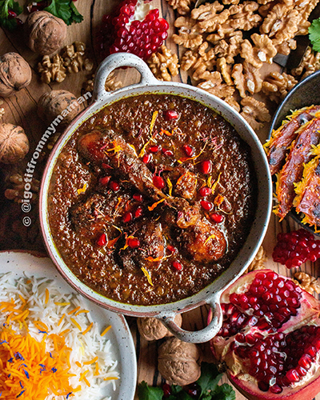
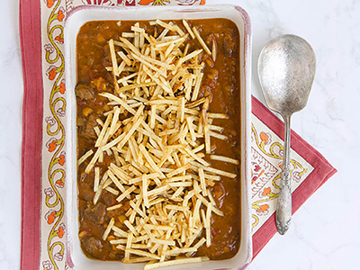
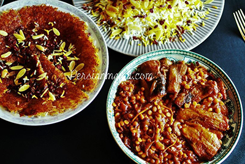
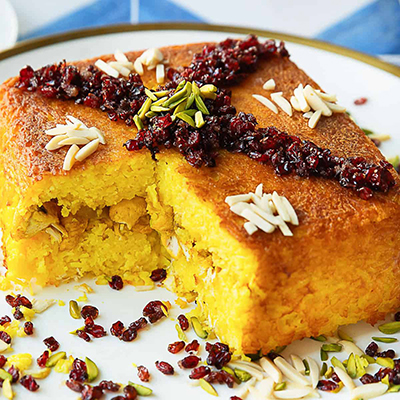
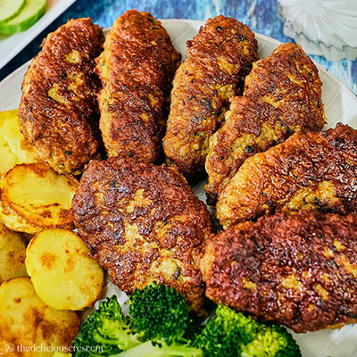
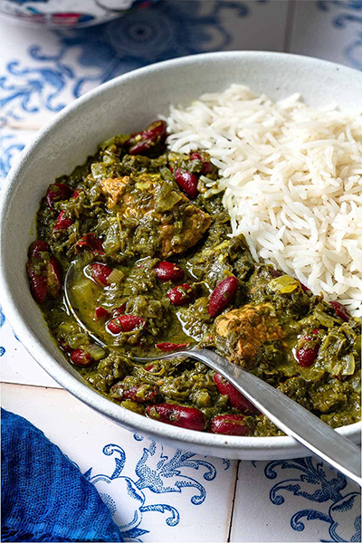
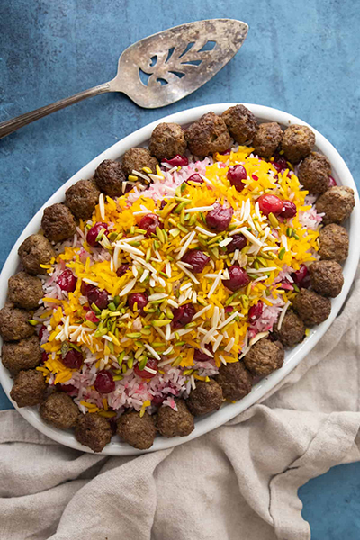
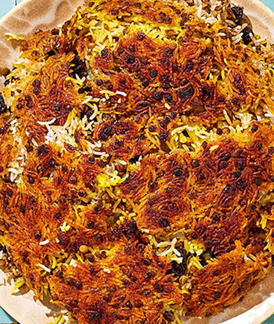

Tadhig is our traditional crispy rice that can be topped with pomegranate seeds and greens.

Lima bean and dills rice often served with saffron chicken or beef

The stew is made using pomegranate molasses and walnuts

Lentel Stew with beef topped with french fries

Eggplant stew with either saffron chicken or beef

Crispy rice stuffed with Saffron Chicken and topped with persian styled sour cherries.

Ground beef patties mixed with saffron and served with potatoes.

Herb stew with beef and kidney beans.

Sweetened rice with saffron and cherries. often served with meatballs.

Lentil rice served with sweet dates and cherries.